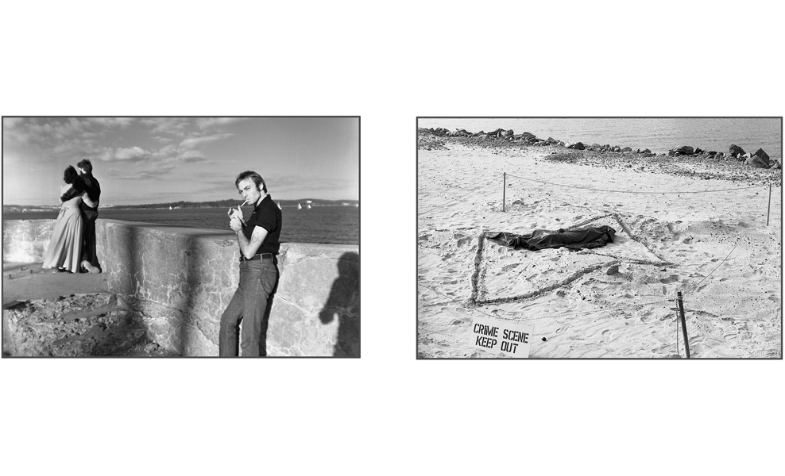

Mac Adam
A Convenient link to Adam's website
Mac Adams (born in 1943 in Brynmawr, South Wales, UK) is a British artist. He graduated from Cardiff College of Art, N.D.D. 1961-66.A.T.D. 1966-67. Rutgers University, Master of Fine Arts. 1967-69. In 1969 while still a grad student he participated in the first ‘Soft Art’ Exhibitions at The New Jersey State Museum, along with Richard Serra. Richard Archwager, Keith Sonnier, and John Chamberlain among others. In 1970 he moved to New York City where he lived and worked until 2002.
AWARDS
Pollock/Krasner Foundation Award 2013. Awarded Distinguished Teaching Professor. State University of New York. College at Old Westbury. 2009.
New York State University Chancellors Research Award for Excellence in Arts and Humanities. 2002.
New York State Fellowship for the Arts (Sculpture). 1988.
National Endowment Fellowship for the Arts (Sculpture). 1982.
Berlin Deutscher Akademischer Austauschdienst Berliner Kunstlerprogram. 1981.
National Endowment Fellowship for the Arts. 1980.
National Endowment Fellowship for the Arts. 1976.
FAMOUS WORKS
The Toaster, 1976
Mystery of 2 Traingles, 1976 
Smoke and Condensation, 1975